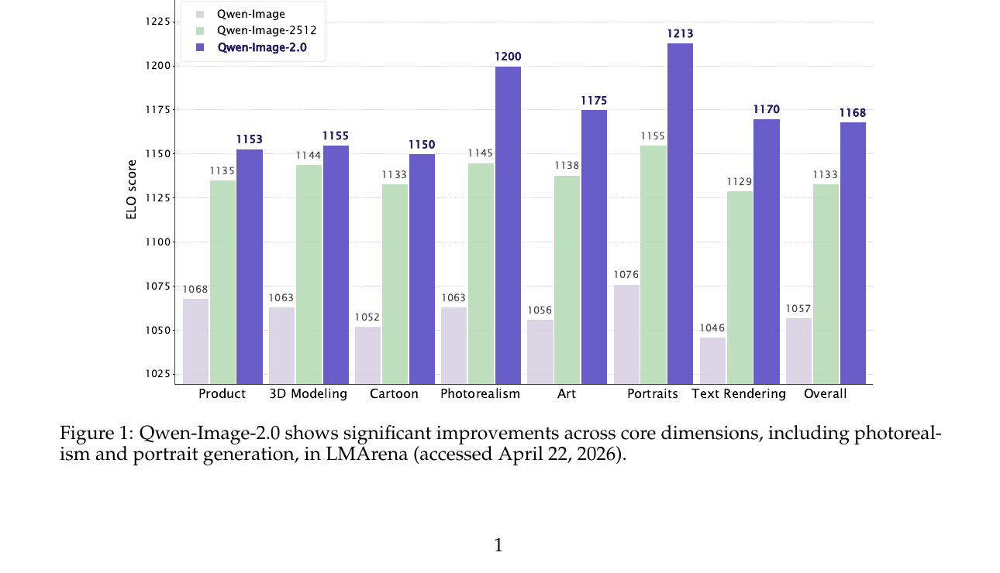
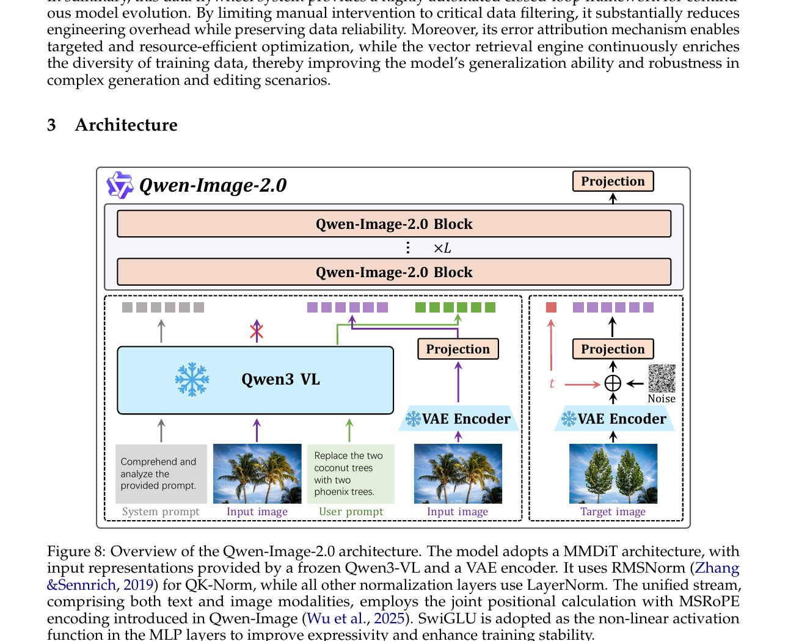
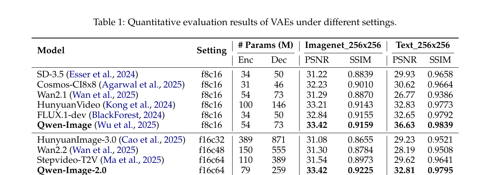
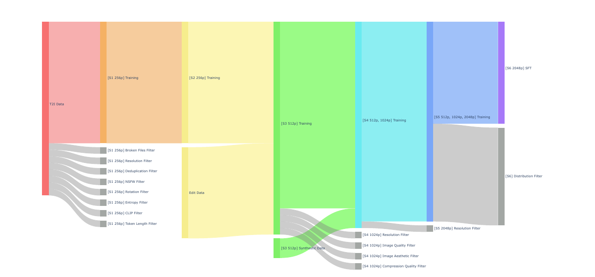
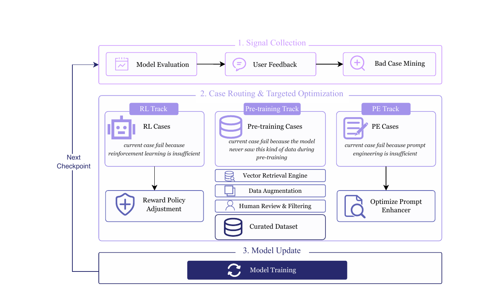
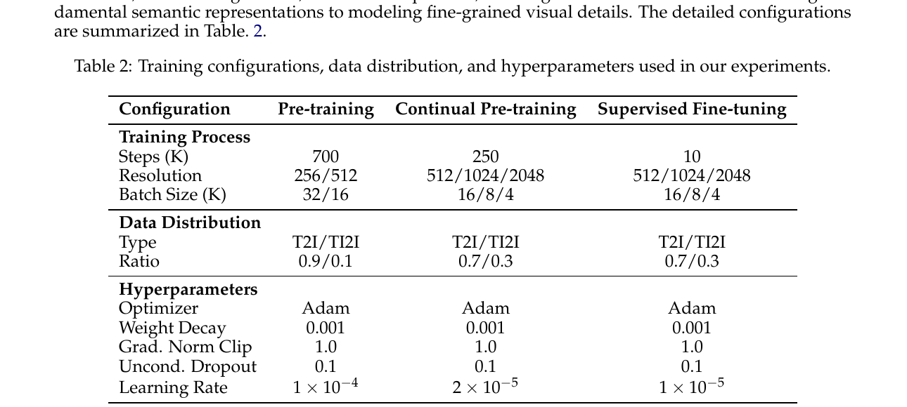
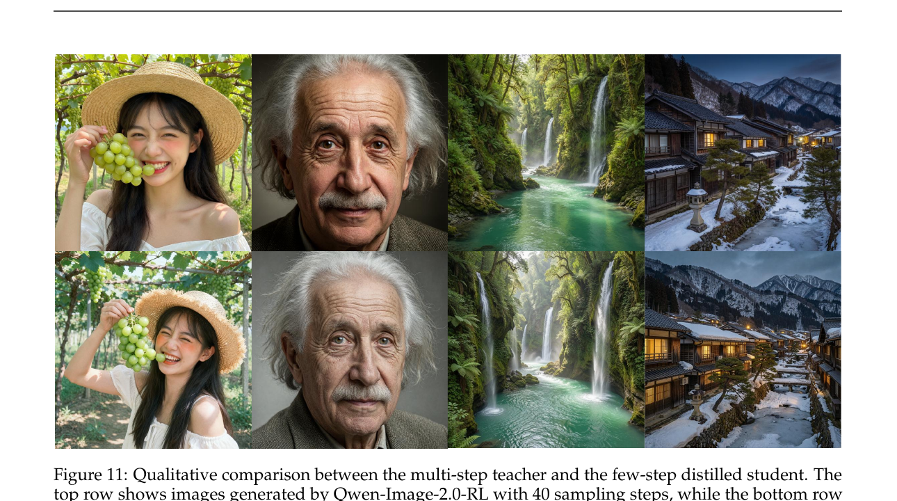

Qwen-Image-2.0 Technical Report
1. 出发点 (Motivation)
2026 上半年 T2I 模型 (FLUX、Stable Diffusion 3.5、Imagen 4、HunyuanImage-3、Seedream 等) 都已经能出"好看"的图,真正的痛点转向了*"实用"*:
- 超长文本渲染: 海报、PPT、漫画、信息图 — 1k+ token prompt 里指定的每个字、每段排版都得对。
- 多语种字形: 中文字符复杂得多,英文之外的 Unicode 范围 (繁体、日文、阿拉伯文、表情符号) 同时支持。
- 高分辨率写实: 2K 原生分辨率而非超分上采样;材质、光影一致。
- 复杂指令遵循: 减少 concept omission、compositional failure、hallucinated content。
- 统一框架: 一个模型同时做 T2I (从 prompt 生成) 和 TI2I (image editing,带参考图),不用切换 pipeline。
Qwen 团队认为这些需求被"现有 foundation model 还没全部解决",同时同一模型同时拿下这些指标的工作几乎没有。Qwen-Image-2.0 就是要做这条"全能"路线。

2. 方法 (Method)
核心思想 (类比)
把 T2I 生成想成一个"室内设计师 + 印刷厂"协作:
- 设计师 (Qwen3-VL): 读懂用户的需求 (中英文 prompt + 参考图),把"我要一张冬日北京街景,左边书法店招牌写'文字渲染',右边花店招牌用鲜花拼'真实质感'..."翻译成一份结构化设计稿 (隐空间表示)。设计师本身不画 — 冻结的 VLM。
- 印刷厂 (MMDiT): 拿着设计稿,在纸张尺寸缩小 16 倍 (高压缩 VAE) 的工作台上,用一堆模板 ("denoising step") 一笔笔把图画出来,最后再放大成 2K。
- 编辑工人 (Prompt Enhancer): 用户的 prompt 可能太抽象 ("画一只猫"),先有个 PE 模块把它扩成详细设计稿 ("一只蓝眼睛橘色虎斑猫,坐在窗台上,背景是黄昏的城市天际线..."),再交给设计师。
- QA 飞轮 (Data Flywheel): 用户反馈、bad case 自动路由到"是 RL 出错? 是数据不够? 还是 PE 没扩好?",对应自动修。
整套工厂还要会做修改任务 (TI2I editing) — 你给一张猫的图,加一句"把头上戴个帽子",同一个 pipeline 把图改了。秘密:VLM 把"原图 + 编辑 prompt"一起编码成 context,VAE 编码"原图 latent"和"目标图 latent"喂给 MMDiT。
2.1 架构总览

三个组件:
- MLLM (Qwen3-VL): condition encoder。处理 text + 参考图,输出 modality-aware 表示 \(h_y\)。冻结的,不参与训练 — 复用 Qwen3-VL 的 in-context 能力 (这条跟 D-OPSD 同思路)。
- VAE (f16c64,79M enc / 259M dec): 把 input image 编码到隐空间 \(E_x\),在隐空间里 diffuse,再解码回图像。Section 2.2 详细。
- MMDiT: 共享 transformer backbone 同时处理 text 和 image token。Section 2.3 详细。
跟 Qwen-Image 1.0 (Wu et al. 2025) 的关键区别 — 这是一个纯升级论文,没改 paradigm:
- 1.0 用 f8c16 VAE (54M enc / 73M dec),2.0 用 f16c64 (79M enc / 259M dec) — 压缩率 ×2,decoder 容量 ×3.5。
- 1.0 是单一 T2I,2.0 统一 T2I + TI2I。
- 2.0 加了 PE 模块 + RLHF + DMD 蒸馏 + 数据飞轮。
2.2 高压缩 VAE — 这是 2.0 最大的工程胜利 (§3.1)
原生 2K 分辨率训练 = 计算成本爆炸。常见做法 \(f=8\) 压缩 (8× 空间下采样 + 16 channel) 让 2K 图变成 256×256×16 的潜变量,但 256² latent 还是大。Qwen 把压缩率推到 \(f=16\)、channel 推到 64,latent 体积砍到 128² × 64 — 像素数比 f8c16 少 4×,DiT 训练 FLOPs 也省 4×。
但 \(f=16\) 经典 trade-off:
- 压得太狠 → 信息瓶颈,重建掉精度。
- 提通道数补信息 → 高维 latent manifold 难 diffuse (慢收敛、生成质量差)。
论文的解法:
- Residual autoencoder (Chen et al. 2025): 非参数 shortcut 把细节直接 bypass 到 decoder,缓解信息瓶颈。
- f16c64 而非 f16c32: 同样的"总 channel bottleneck" (8×8×16=1024 = 16×16×64=1024) 提升重建。
- 富文本图像 corpus: 在内部 PDF / slide / poster 数据 + 合成文本段落上训练 VAE,英文中文都覆盖。
- VA-VAE 语义对齐损失 (Yao et al. 2025): 把 latent space 跟语义表征对齐 — 关键观察:早期施加强语义对齐,后期逐步放松,让 reconstruction 和 diffusability 取得平衡。
- 砍掉对抗损失: 大规模 VAE 训练里 adversarial loss 是 redundant 的 (跟 Wu et al. 2025 一致),只用 reconstruction + perceptual + semantic alignment 三项,训练更稳。

这是 2.0 最有冲击力的单一改进。 "f16 VAE 重建质量跟 f8 一样好"对整个领域是个 unlock — DiT 训练成本 4×,推理成本 4×。
2.3 MMDiT 的几个几何细节 (§3.2)
架构沿用 MMDiT (Esser et al. 2024) 范式,text 和 image token 在共享 transformer backbone 里联合处理。Qwen-Image-2.0 的具体几何选择:
多模态 token 序列构造 (Eq. 1):
\(E_x\) 来自 VAE encoder,\(h_y\) 来自 Qwen3-VL — 替换掉了 Qwen3-VL 输出的视觉部分 \(h_x\)。这一替换是因为 MLLM 的视觉 token 是为识别训的,VAE latent 才适合生成。
位置编码: 用 Qwen-Image (Wu et al. 2025) 的 MSRoPE — 把 text token 和 image token 在同一套 ROPE 系数下编码,跨模态可以正确计算相对位置。
归一化: RMSNorm (Zhang & Sennrich, 2019) 用于 QK-norm,其他都用 LayerNorm。
Modulation:纯乘性,不带 bias (Eq. 2)
而不是常规的 \(h' = \alpha h + \beta\)。没解释为什么,但 Qwen team 经验上观察"乘性 modulation 在大规模 MMDiT 上更稳"。
SwiGLU MLP (Eq. 3):
\(\sigma\) 是 SiLU,\(\Phi_1, \Phi_2\) 是两个线性投影,\(\otimes\) 是 element-wise product。这是 LLaMA / Qwen-LLM 的标准 FFN。论文给的动机:"joint text-image training 容易让某些 neuron 激活值过大、premature saturation",SwiGLU 比 SiLU 缓解了这个问题。
2.4 Prompt Enhancer — 把用户随手写的 prompt 自动扩成 1k token 设计稿 (§3.3)
真实用户 prompt 跟训练数据的"详尽设计稿"之间有 distribution gap。PE 模块用 Qwen3.5-9B 初始化,把用户的"画只猫" 扩成几百到 1000 token 的详细描述。
数据构造的妙处 — Reverse engineering:
- 拿一个 fine-grained 标注 \(P_{\text{fine}}\)。
- 用 LLM 把它分类成 General / Portrait / Text / Complex Text 四类。
- 从"降级策略池"\(S\) 里采样一组策略 (stylistic simplification、colloquialization、删除 lighting / texture / layout 等细节)。
- 应用这些策略产生退化的口语化 prompt \(P_{\text{short}}\)。
- 每个降级操作的逆定义了"如何把短 prompt 还原成长 prompt"的 CoT — 形成 \((P_{\text{short}}, \text{CoT}, P_{\text{fine}})\) 三元组训练 PE。
PE 训练分两段:
- SFT: 标准 next-token prediction on \((P_{\text{short}}, \text{CoT}, P_{\text{fine}})\) 三元组。
- RL (GRPO,Shao et al. 2024): PE 生成候选 enhanced prompt → 喂给冻结的图像生成器 → reward = MLLM 视觉一致性 + MLLM 审美评分 + rule-based textual constraint。GRPO 优化 PE,使得它输出的 prompt 真的能改善下游生成质量。
编辑任务的 PE 反过来:用 MLLM 把长 annotation 总结成简短 editing prompt,避免不必要的 stochastic degradation。
2.5 数据 — 6 阶段过滤 + 闭环飞轮 (§2)
6-stage 数据 pipeline (Fig. 6): 从 256P T2I 逐步升到 2048P SFT,每个 stage 加新数据 + 应用新过滤器。

Caption schema 四种: General / Text / Knowledge / Structured。最有意思的是 Structured caption — 把 relation graph、flowchart、diagram 的"实体-属性-关系"显式编码,让模型学层次关系和 topological dependency。
数据飞轮 (Fig. 7) — 论文里最 production-oriented 的设计:

这套飞轮的卖点:error attribution + 三 track 自动路由。一个 bad case 不再笼统标"质量差",而是诊断"为什么差,该用什么 track 修"。人审只在数据增强后的 filtering 那一步介入 — 整个 loop 高度自动。这是商业部署的产物,不是 academic toy demo。
2.6 训练 + RLHF + 蒸馏 (§4)
多阶段训练 (Tab 2):

关键比例 trick:T2I/TI2I 比例从 9:1 调到 7:3 — pre-training 阶段以 T2I 为主建立基本生成能力,继续训练时 30% TI2I 加强编辑能力。SFT 同样 7:3。
RLHF (§4.2): 5 个 task-specific composite reward models:
- Aesthetic reward (T2I) — 构图、光照、材质、艺术连贯
- Image-text alignment reward (T2I) — 语义对齐,惩罚遗漏/误解/矛盾
- Portrait reward (T2I) — 解剖学合理、面部比例、身份保留、皮肤毛发纹理
- Instruction-following reward (TI2I) — 编辑指令是否被精确执行
- Visual consistency reward (TI2I) — 保持未修改区域的几何 / 拓扑 / 语义
所有 reward 校准到可比尺度,权重训练过程中动态调整避免过度优化某一维。
关键 RL 设计 — CFG 混合策略: Rollout 时用 CFG (Ho & Salimans 2022) 生成高质量样本评 reward,但policy 优化目标里排除 unconditional branch。这条比同期 Flow-GRPO / Flow-OPD 都精细 — 保 fidelity + 省算力。Adapted GRPO framework (Liu et al. 2026; Wang et al. 2025; Zheng et al. 2025) — 注意这跟 RL's Razor 等用的同一个 GRPO 家族。
Few-step 蒸馏 — DMD (§4.3): 用 Distribution Matching Distillation (Yin et al. 2024) 从 40-step teacher 蒸馏到 4-NFE student。DMD gradient 形式 (Eq. 4):
其中 \(s_{\text{fake}}\) 是辅助 score 模型 (基于 student-generated 样本 + flow-matching 目标训练),\(s_{\text{real}}\) 是冻结的 teacher diffusion score。\(x_t = (1-t) x_\theta + t \xi\) 是 student 的 clean 预测和独立 Gaussian noise 的线性插值。
论文 motivation:DMD 在异构生成架构上 (SD、PixArt、各种 DiT) 都稳,所以选它而非 Consistency Models 或 trajectory-based 方法。

2.7 与代码 (no, mostly)
Qwen-Image-2.0 的训练代码和权重都未公开。官方 GitHub repo QwenLM/Qwen-Image 只有:
README.md,Qwen-Image.md,Qwen-Image-Edit.md,Qwen-Image-Edit-2509.md— 文档src/examples/demo.py,edit_demo.py,generate_w_prompt_enhance.py— 1.0 / Edit 旧版的 diffusers 推理示例assets/— 文档图
2.0 模型只通过 Qwen Chat 商业 API 提供,HF 上的 Qwen/Qwen-Image 仍是 1.0 weights (截至 2026-05)。所以本文没法做"代码 vs 论文"的对照分析 — 全部架构 / 训练细节都依赖论文文字描述。
下面是教学性的 didactic 实现 — 不是 Qwen 代码,只是论文 Eq. 1-3 的 PyTorch 翻译,方便对照阅读:
Didactic reference — paper Eq. 1-3 (architecture geometry), NOT Qwen official code
class QwenImage2Block(nn.Module):
"""Single MMDiT block — geometry follows paper §3.2."""
def __init__(self, dim, num_heads, ffn_mult=4):
super().__init__()
# RMSNorm for QK-norm (paper §3.2)
self.q_norm = RMSNorm(dim // num_heads)
self.k_norm = RMSNorm(dim // num_heads)
# All other norms are LayerNorm
self.norm_attn = nn.LayerNorm(dim)
self.norm_ffn = nn.LayerNorm(dim)
# Attention: shared text+image transformer (MMDiT)
self.attn = MMDiTAttention(dim, num_heads, use_msrope=True)
# SwiGLU MLP (paper Eq. 3): h = Φ₁(x) ⊗ σ(Φ₂(x))
hidden = ffn_mult * dim
self.w1 = nn.Linear(dim, hidden, bias=False) # Φ₁
self.w2 = nn.Linear(dim, hidden, bias=False) # Φ₂
self.w3 = nn.Linear(hidden, dim, bias=False) # output projection
def swiglu(self, x):
# Paper Eq. 3
return self.w3(self.w1(x) * F.silu(self.w2(x)))
def modulate(self, h, alpha):
# Paper Eq. 2: h' = α·h (NO bias β — pure multiplicative)
return alpha * h
def forward(self, h, alpha_attn, alpha_ffn):
# h: concat(VAE latent, Qwen3-VL hy) — paper Eq. 1
h = h + self.modulate(self.attn(self.norm_attn(h)), alpha_attn)
h = h + self.modulate(self.swiglu(self.norm_ffn(h)), alpha_ffn)
return h
def build_multimodal_sequence(input_image, input_text, qwen3_vl, vae_encoder):
"""Paper Eq. 1: h = Concat(E_x, h_y)"""
with torch.no_grad():
# Qwen3-VL is FROZEN — extracts modality-aware text embedding
hy = qwen3_vl.encode_text_with_image_context(input_text, input_image)
# Replace VLM's visual tokens with VAE latent — paper §3.2
Ex = vae_encoder(input_image) # f16c64 VAE
h = torch.cat([Ex, hy], dim=1)
return h
注意几个关键点:
- L21: Eq. 2 的纯乘性 modulation — 没有 bias 项 \(\beta\)。这是 Qwen team 的非平凡选择,缺乏对照实验解释为什么。
- L29-30: Qwen3-VL 整个 frozen,只用其 forward,梯度不流入。
- L32: VLM 的视觉 token \(h_x\) 被丢弃,换成 VAE latent \(E_x\) — 因为前者是 recognition 用的,后者是 generation 用的。这是 D-OPSD 同一时期也观察到的设计选择。
3. 结论 (Key Findings)
LMArena T2I (real user blind preference,2026-04-22 snapshot):
- Qwen-Image-2.0 全球 #9, 中文模型 #1
- ELO 1168,超过 Nano Banana
- 跨 8 维度 ELO 涨幅 (vs 1.0):Product +85,3D Modeling +90,Cartoon +98,Photorealism +92,Art +99,Portraits +79,Text Rendering +84,Overall +76 — 全部明显改善
VAE 重建 (Tab 1):
- ImageNet 256²:PSNR 33.42,SSIM 0.9225 — 跟 Qwen-Image 1.0 (f8c16) 的 33.42 / 0.9159 持平,但 latent 占用 4× 少
- Text 256²:PSNR 32.81,SSIM 0.9795 — 富文本场景重建仍然 SOTA 级
- 同 f16 段 (HunyuanImage-3 f16c32 / Wan2.2 f16c48 / Stepvideo-T2V f16c64) 的 PSNR 都在 31 左右,Qwen-Image-2.0 显著优于
定性能力 (§5.2-5.3 的对比图):
- 超长中文文本渲染 (Fig. 13): 1k token 包含中文海报、广告语的 prompt 上,Qwen-Image-2.0 是唯一能做到 (a) 字符级正确 (b) 空间位置正确 (c) 物理合理 (字写在招牌上、衣服上而非"飘"在空中) 三者同时满足的;GPT-Image-2、NanoBanana Pro、Wan2.7 Pro、Seedream 5.0 Lite 都有不同程度的"乱字、漏字、位置错"。
- 多张参考图 + identity 保留 (Fig. 17): "把第二张图的帽子戴到第一张图的猫头上,加胡萝卜和纸巾",其他模型要么改了猫的毛色,要么变了猫的姿势,要么把物体放错位置。
- 古文诗词排版 (Fig. 16): 40 字长古诗,只有 Qwen-Image-2.0 能做到 字符正确 + 竖排右起 + 章法和谐三者兼顾。
蒸馏 (Fig. 11): 4-NFE DMD student 跟 40-step teacher 在 portrait / landscape / 自然场景上视觉质量几乎不可分,10× 推理加速。
4. 实现细节 (Implementation Notes)
Qwen-Image-2.0 是一个商业 production 系统,论文公开架构 + 训练 recipe 但不开源代码 / 权重。下面是从论文文字提炼的关键工程参数:
- MLLM: Qwen3-VL (Bai et al. 2025a),冻结,只作 condition encoder。论文没说哪个规模 (Qwen3-VL 有多个 size)。
- VAE: f16c64,79M encoder / 259M decoder。Residual autoencoder + semantic alignment loss + 砍 adversarial loss。
- MMDiT 规模: 论文完全没披露 — block 数 \(L\)、隐藏维度、attention head 数、总参数量都不知道。这是商业敏感信息缺失。
- Prompt Enhancer: 初始化自 Qwen3.5-9B (Team 2026),SFT + GRPO 二阶段训练。
- 训练: Pre-training 700K steps,Continual pre-training 250K steps,SFT 10K steps。lr 1e-4 → 2e-5 → 1e-5。Adam + WD 0.001 + grad clip 1.0 + unconditional dropout 0.1 (for CFG)。
- 分辨率 schedule: 256P → 256P + edit → 512P + synthetic → 512/1024P + 4 个 quality 过滤器 → 多分辨率 to 2048P → SFT distribution filter。
- RLHF GPRO: CFG 用于 rollout sampling,不用于 policy optimization (混合策略)。5 个 reward model:Aesthetic / Image-text alignment / Portrait / Instruction-following / Visual consistency。reward weight 动态调整。
- DMD 蒸馏: 40-step teacher → 4-NFE student。\(x_t = (1-t)x_\theta + t\xi\),\(t\) 从 logit-normal 分布采。Fake score 用 flow-matching 目标训练。
- 数据飞轮: Error attribution → 3 track 自动路由 (RL / pretraining / PE)。人审只在 pretraining track 的 augmentation+filtering 阶段介入。
- **训练资源:**完全没披露。同期 Flow-OPD 用 32 H800,LeapAlign 用 16 GPU — Qwen 这个规模 + 700K + 250K + 多阶段必然是 1000+ GPU。
- **代码 vs 论文 gap:**无法对照 — 没代码 / 没权重 / 没 model card。所有细节都是论文文字描述。这是最大的可重现性短板。
5. 批判性总结 (Critical Assessment)
5.1 优点
- f16c64 VAE 是真正的技术飞跃。 论文 Tab 1 数字最让人服气 — 跟 f8c16 持平的重建质量,但 latent 体积 4× 少。residual autoencoder + 动态 semantic alignment + 砍 adversarial loss 这三个工程细节都有具体支撑,不是 hand-waving。对整个 T2I 领域是个 enabler — 后续大模型都可以用这套 VAE 大幅省算力。
- "VLM 当 condition encoder 但替换其视觉 token"是清晰的解耦。 让 Qwen3-VL 出 multimodal-aware 文本表征,但把 VLM 的视觉 token 丢掉,换成 VAE latent。这条 ground D-OPSD、Flow-OPD 等同期工作的设计哲学 — recognition 表征 ≠ generation 表征。
- 数据飞轮 (Fig 7) 是产品级系统思维。 不是 "我们收集了 X B 张图",而是"用户提交一个失败案例,自动诊断属于 RL / 数据 / PE 哪一类,自动修"。这种 error attribution + 三 track 自动路由把"模型迭代"从手工劳动变成了可工程化的流水线。学术 paper 罕见这种 production engineering 内容。
- Prompt Enhancer 的 reverse-engineering 数据构造很巧妙。 不需要"找用户写短 prompt 配对长 prompt"这种数据 — 直接从长 prompt 反向降级,顺手得到一个 CoT (degradation 操作的逆),三元组训 PE。一举三得。
- RLHF 的 CFG 混合策略很精明。 rollout 用 CFG 出高质量样本评 reward,但 policy gradient不通过 unconditional branch — 既保 fidelity 又省一半的 conditional forward。这条比同期 Flow-OPD/Flow-GRPO 都精细。
- DMD 蒸馏到 4 NFE 在 portrait/landscape/natural scenes 上视觉质量持平。 推理 10× 加速,直接服务商业部署。Few-step distillation 选 DMD 而非 trajectory-based,经验解释具体 (DMD 跨架构稳定)。
- 多语种文本渲染 + 古文章法是真实差异化。 海外模型 (GPT-Image-2, NanoBanana Pro) 中文字符常崩,Qwen 在中文长古诗 + 复杂排版上明显领先。这块是中文模型的天然主场。
5.2 不足 / 疑点
- 不开源 — 最大缺陷。 训练代码、模型权重 (2.0 版本)、训练数据都未公开。HF 上的 Qwen/Qwen-Image 仍是 1.0 weights。这意味着所有结论都是"trust the authors",第三方无法复现、无法做消融、无法做安全审计。同期 D-OPSD / LeapAlign 都至少开了 LoRA 训练代码 — Qwen 这次没有。
- MMDiT 规模完全没披露。 Block 数、hidden dim、attention head 数、参数总量、训练 GPU 数都没说。这是商业敏感信息但学术 paper 应该至少有 model card。读者根本不知道"这是 7B 还是 70B"。
- 评估高度依赖 LMArena ELO + qualitative comparison。 没有 GenEval / DPG / T2I-CompBench 等标准 benchmark 数字 — 而这些恰好是同期 Flow-OPD、LeapAlign、SD3.5 这些 paper 的主战场。读者无法跟其他模型 apples-to-apples 比。Tab 1 只有 VAE 的 PSNR/SSIM,DiT 本体没有量化对比。
- 定性对比 (Fig 13-17) 全是 cherry-picked. "Qwen-Image-2.0 是唯一做对的"这种 framing 在每张图都重复 — 显然只挑了 Qwen 强对手弱的 prompt。负面例子 (Qwen 失败、对手成功) 一张都没有。这是 product launch 的 framing,不是科学比较。
- RL reward 设计没消融。 5 个 reward model + 动态权重调整 + CFG 混合策略 — 任何一个组件砍掉会怎样?论文没做。
- 数据飞轮的"error attribution"机制是黑盒。 怎么自动判断一个 bad case 属于 RL/data/PE 哪一类?Fig 7 只画了 box 没解释 attribution algorithm。这是飞轮的核心,paper 应该详细描述。
- "无对抗损失"的 VAE 训练 claim 在大规模上没有数字支撑。 论文说 "consistent with Wu et al. 2025" 但没单独做"有 adv loss vs 无"的消融。
- Modulation 用纯乘性 (\(h' = \alpha h\)) 没解释。 这是个非 trivial 的设计偏离 — 业界默认都是 affine modulation。Qwen 的选择可能有性能/稳定性数据支撑,但论文没给。
- 多语种支持的边界没标。 文中说 "diverse languages",Fig 18 展示了多语种,但具体哪些语言被训过、哪些是 zero-shot 泛化、哪些性能差,没列。商业上很重要。
- 没有 ELO 之外的 user study。 LMArena 是公开 user blind preference,但 sample size、用户分布、prompt 选择是否对 Qwen 有偏向都不可控。配套人工评估可以加强可信度。
- 蒸馏只在 portrait/landscape/natural scenes 上对比 (Fig 11)。 4-NFE student 在超长文本渲染(论文核心卖点) 上表现如何没单独评估 — text 渲染对每步质量要求特别高,蒸馏可能在这里掉得最严重。
- "Closed-loop data flywheel" 听上去美,但其商业部署的代价是用户隐私. "user feedback from real-world online interactions" 意味着真实用户 prompt + 生成结果都进了训练循环 — paper 没讨论数据隐私 / 同意机制 / 内容审核。
5.3 适用 vs 不适用
- ✅ **适用:**需要中文超长文本渲染、海报 / PPT / 漫画 / 信息图生成 — 这是 Qwen-Image-2.0 的核心差异化主场。
- ✅ **适用:**需要 T2I + 图像编辑统一框架 (单一商业 API) — 不必切换 pipeline。
- ✅ **适用:**商业场景能接受 Qwen Chat 闭源 API。
- ✅ **方法论上适用:**想做高分辨率 T2I 训练的团队可以借鉴 f16c64 VAE 设计 (residual + semantic alignment + 砍 adv loss) — 这是论文最 transferable 的贡献。
- ❌ **不适用:**需要 self-host 或 fine-tune 的场景 — 没权重 / 没训练代码,只能调用 API。
- ❌ **不适用:**学术研究需要量化 benchmark 对比 — 论文没给 GenEval / DPG / T2I-CompBench 数字,只能看 LMArena ELO 和 qualitative。
- ❌ **不适用:**对推理成本极敏感、能接受质量略降的场景 — 商业 API 价格不透明,自托管不可能。
- ⚠️ **谨慎:**所有 "Qwen-Image-2.0 唯一做对" 的 qualitative comparison 是 cherry-picked,实际部署前自己测一遍多样化 prompt。
5.4 进一步阅读
- Qwen-Image 1.0 (Wu et al. 2025):2.0 的前身,MSRoPE / VAE 设计的根源。
- MMDiT / Stable Diffusion 3 (Esser et al. 2024):多模态 DiT 范式的原始来源。
- VA-VAE (Yao et al. 2025):Qwen-Image-2.0 用的 VAE 语义对齐损失出处。
- GRPO (Shao et al. 2024):Qwen RLHF 的算法基础。
- DMD (Yin et al. 2024):few-step 蒸馏方法。
- D-OPSD (Jiang et al. 2026):同期 paper,VLM-encoder 继承 in-context 能力的另一例 (用 Z-Image-Turbo),论证了"现代 T2I 用 LLM/VLM 当 encoder 是范式收敛"。
- Flow-OPD (Fang et al. 2026):Flow Matching 多 reward RL 对齐,跟 Qwen-Image-2.0 的 RLHF 思路对比。
- LeapAlign (Liang et al. 2026):Flow Matching 模型上 reward 直接梯度的 leap-trajectory 方法,可以对照 Qwen 的 GRPO 路线。